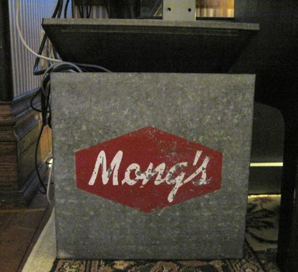

Here is some backstory and more pictures to go along with my interview in The Setup.
When I was first contacted for an interview, Andrew W.K. was above the fold. I had gotten some goofy pictures taken at PyCon 2012 at the About.me booth, and I figured that if ever there were a time to use the “hard core” shot, this was it.
Here is W.K.’s for comparison:
Of course my interview didn’t go up for a couple weeks after his, so the tie-in isn’t as strong as I hoped at first. I still get a kick out of it though. :-)
Here’s the runner-up from that About.me session:
My standing desk is on the third floor of our house, tucked into a dormer. I refer to my office up there as The Ivory Tower. It’s removed from the noise downstairs, but when the trains rumble by you definitely feel it more upstairs.
The keyboard has some light modifications. The brass legs change the angle so my wrists aren’t bent all day. I tried really hard to find a machine shop or someone who would thread them to fit the existing screw holes, but failed. They’re affixed with stickum, as is the trackball. I looked into embedding the trackball into the keyboard shell but that was infeasible as well.
The milkbox that holds the cords is from a dairy called Mongs, which may or may not be the Mongs Dairy near where my wife grew up. Either way, I named a MongoDB database browser after it.
When I broke my iPhone it looked like this:
Below is a montage of me fixing it. You can clearly see the Gorilla Glue in the second picture. I tried soldering it three times but couldn’t get it to hold when I manipulated the wires after closing the case. The glue worked great.
I never made it to the front of the Genius Bar line. I left after interacting with the starry-eyed Googler in front of me, who politely refused to shake my hand. “I don’t do the handshake thing,” is how he said it.
I don’t know if my wife’s grandfather used this regularly at IBM, but it’s somehow poetic that it fits a MacBook so perfectly.
The one from my dad is one he bought in Cambridge, England. I was born there while he was in school, so it’s at least as old as I am. I found it in a box in the garage while in high school, and took it to a cobbler to fix. Now that shoe shop is a coffee shop where I’m a regular.
I bought our waffle iron on eBay for my wife for Christmas, 2011. The first batch of waffles from it was inedible, covered in decades of grime. It took about six or eight batches to clean the thing and perfect the technique, and a couple more to nail the recipe.
I love this thing. :-)